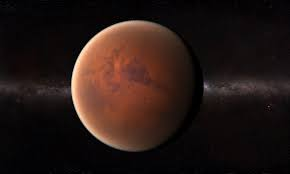
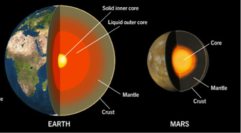

|
|
 |
This website is dedicated to outlining how and if building a colony on Mars is a viable option for humanity. It will begin by comparing conditions on Earth and Mars, then talking about how we can build the colony on Mars, and then finally end by talking about the results of building a colony there.
There are many differences between Earth and Mars. The main difference being the non-existent atmoshpere and flowing water on Mars. The following table will show the differences in the measurements between Earth and Mars.
|
|
|
As you can see there are very big differences between Earth and Mars, one of the biggest of which is the huge difference in oxygen and water percentage. Given that oxygen and water are neccessary for humans to live, the first and foremost challenge would be to figure out a way to create oxygen and water on Mars. There is water on Mars, but it is frozen in underground pool, so we would have to figure out a way to bring it to the surface. The vitual non-existence of nitrogen also causes a big concern since the element is essential in order for a planet to have an ecosystem, which Mars currently does not.
The surface temperature offers similarities to Earth, however the problem is in the fact that Mars experiences temperature changes much more frequently than Earth does.
These, however are not the biggest problems. The biggest problem is that Mars has a very, very thin atmosphere.
|  | Mars does not have a molten outer core like the Earth does, so, it does not have a strong magnetic field. Without a magnetic field, it will never be able to hold any of the gases necessary to build an atmosphere on Mars. The solar winds will strip away any gases that we put into the Martian atmosphere. |
 |
There are many theories as to how we can terraform Mars: we could drop nuclear bombs at the poles on Mars and jolt it into developing an atmosphere, create a magnetic shield between Mars and the Sun in order to protect it from the solar winds, inject powerful greenhouse gases like ammonia and methane into the atmosphere, and many others. So instead of going through each of them, here is a video that goes through some of them. |